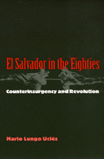

An in-depth examination of Salvadoran insurgency and the U.S.-backed counterinsurgency in the 1980s
An in-depth examination of Salvadoran insurgency and the U.S.-backed counterinsurgency in the 1980s


 An in-depth examination of Salvadoran insurgency and the U.S.-backed counterinsurgency in the 1980s
An in-depth examination of Salvadoran insurgency and the U.S.-backed counterinsurgency in the 1980s

|  |
El Salvador in the EightiesCounterinsurgency and RevolutionOriginal Spanish Text by Mario Lungo UclésMario Lungo Uclés, introduction by Arthur Schmidt, translated by Amelia F. Shoganpaper EAN: 978-1-56639-432-1 (ISBN: 1-56639-432-5) |
Casa de las Amèricas Prize for the Spanish Edition, 1990
"...a clear, insightful, and authoritative analysis of major events in El Salvador during the past decade. I don't know of any work in English that rivals it. Its great strength is that it looks at these events—and explores the possibilities for the future—from a variety of Salvadoran perspectives, rather than from that of U.S. policy makers. It is an important contribution to scholarship, and at the same time quite accessible to students and activists."
—Hugh Lacey, Swarthmore College
Depicting a new stage of Salvadoran history that began in 1979, Mario Lungo Uclés offers an acute analysis of the transformation of El Salvador during the 1980's under the impact of revolution and counterinsurgency. This new and expanded English-language edition of his award-winning book traces the historical roots of the Salvadoran insurgency and demonstrates how the counterinsurgency efforts promoted by the United States failed to anticipate either the durability of the rebels or the rise of the Nationalist Republican Alliance as the country's first explicitly bourgeois political party.
Lungo Uclés explains the reasons behind the remarkable outcome of the war in a negotiated settlement and why El Salvador's future requires a major reformulation of the politics and institutions of both the left and the right. This is a work of importance not just for the politics of El Salvador but for other Third World societies in the age of post-Cold War globalization.
Read a review from Journal of Latin American Studies, Volume 30.2 (May 1998), written by Anna Mary Keene (pdf).
Introduction: The Continuing Significance of El Salvador – Arthur Schmidt
1. 1989: A New Era or Simply a New Phase?
2. Key Aspects of the Military Dimension
3. Economy and Population: The Profound Transformations of the Decade of the 1980s
4. The Political Recomposition of the Dominant Classes
5. The Development of a Popular and Revolutionary Alternative
6. Toward the Close of the Political Period Begun in 1979
7. Epilogue: Reviewing the Initial Formulations
Glossary: The Most Important Salvadoran Acronyms
Notes
Index
Mario Lungo Uclés is currently Professor at the Universidad Centroamericana in San Salvador, El Salvador. He is former editor of the journal Estudios Sociales Centroamericanos and the author of several books.
Latin American/Caribbean Studies
Political Science and Public Policy
© 2015 Temple University. All Rights Reserved. This page: http://www.temple.edu/tempress/titles/937_reg.html.